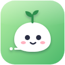

반려 페이지 키우기
말을 먹고 자라는 페이지.
아무것도 없는 화면에 말을 건네면 점에서 선, 면, 생명, 입체로 자랍니다.
어떤 프로젝트인가요?
건넨 말이 몸이 되고, 자란 페이지는 인연을 만나고 꿈을 품고 집을 짓습니다. v0.16.0부터는 이름 있는 것을 말하면 그 모습으로 변신하고, v0.17.0부터는 변신한 모습이 저마다 움직이고 소리를 내며 모자·왕관·안경을 겹쳐 입습니다.
- 새로운 말을 먹일수록 성장(점 → 선 → 면 → 2D → 3D)
- 인연·꿈·집·직업으로 이어지는 인생 시뮬레이션
- “고양이가 보고 싶어” → 고양이로 변신, 약 830개 단어
페이지 키우기
기록은 이 브라우저에만 저장됩니다. 다른 기기나 브라우저에서는 처음부터 시작합니다.
반려 페이지 열기 ↗